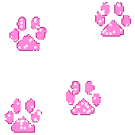

Creature Chronicles
Founded Dec. 2024!

Welcome to the creature chronicles! :3
Below you can view media and read facts about these silly
creatures by clicking on their respective pages!
You can always request new animals to be added by making
a pull request in my GitHub page, which will be linked below!
I am currently in the process of relearning HTML, and I was inspired
to make this page in order to execute my knowledge.
I hope you enjoy my silly little encyclopedia that I am making!
Wanna learn about a specific creature? Click on its respective button!
Cats
Capybaras
Dogs